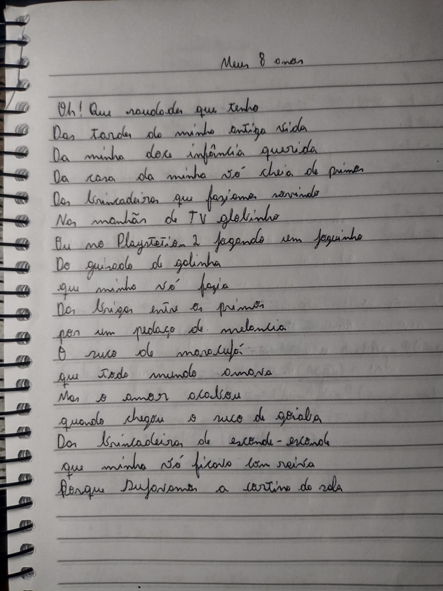
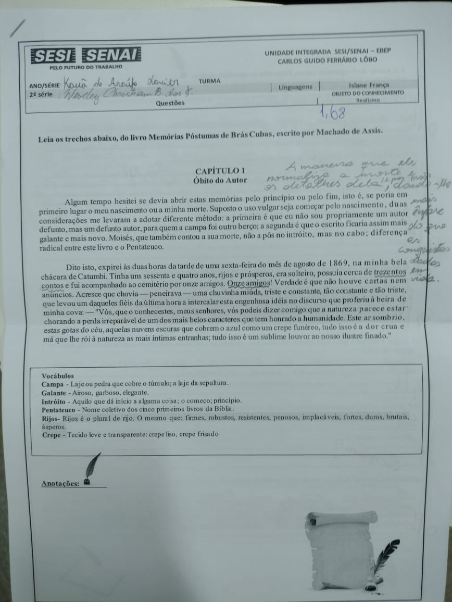
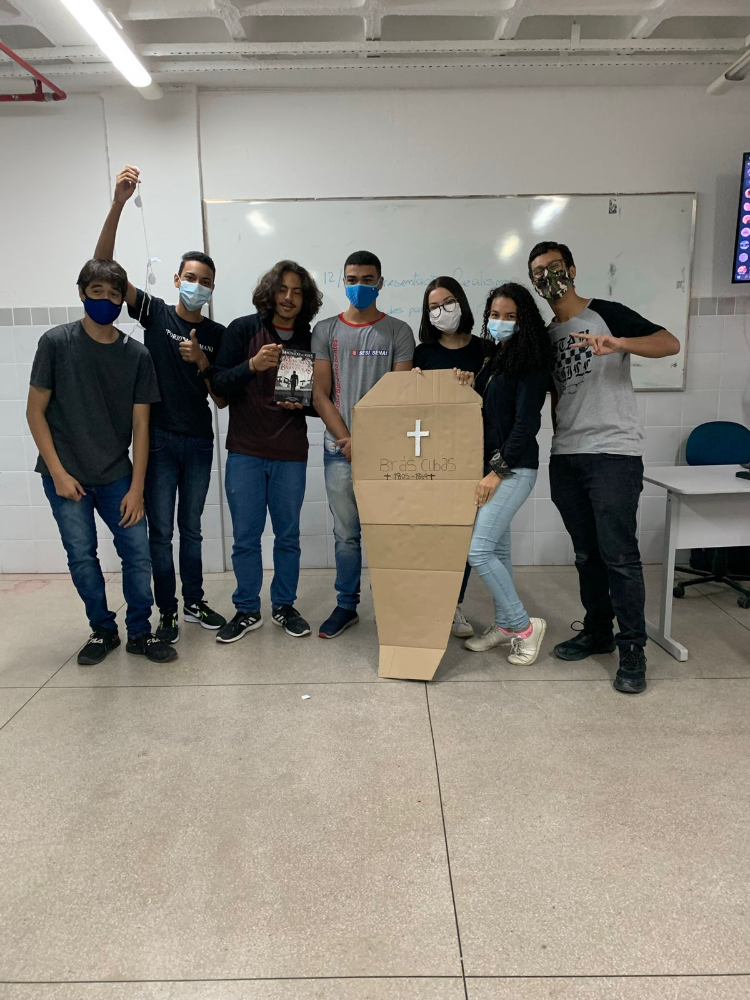
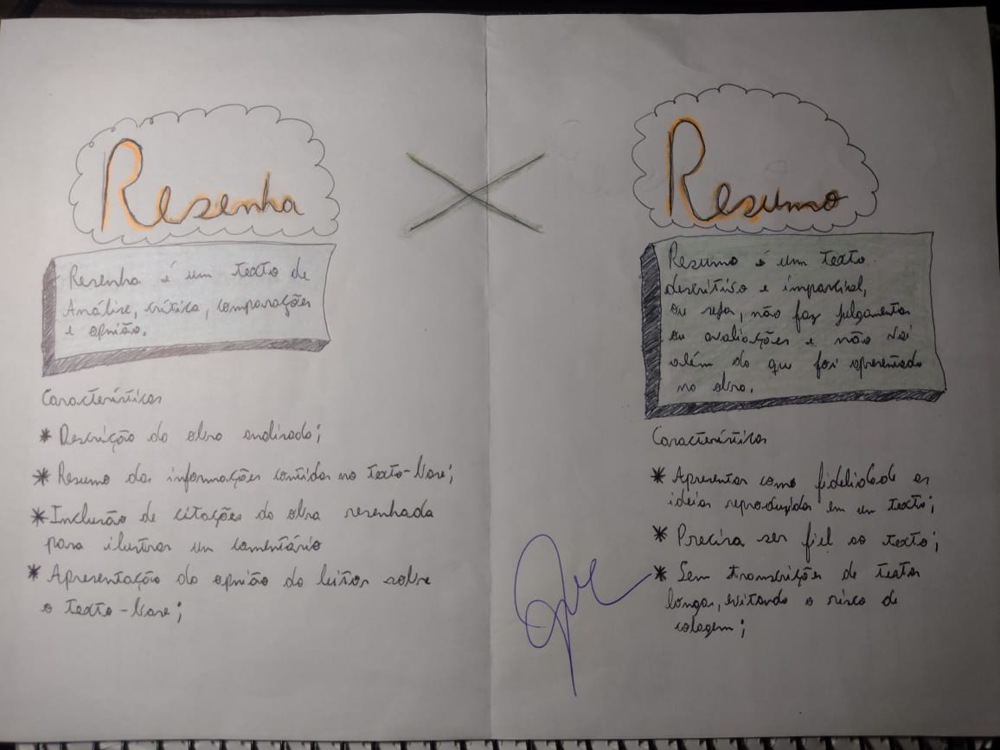
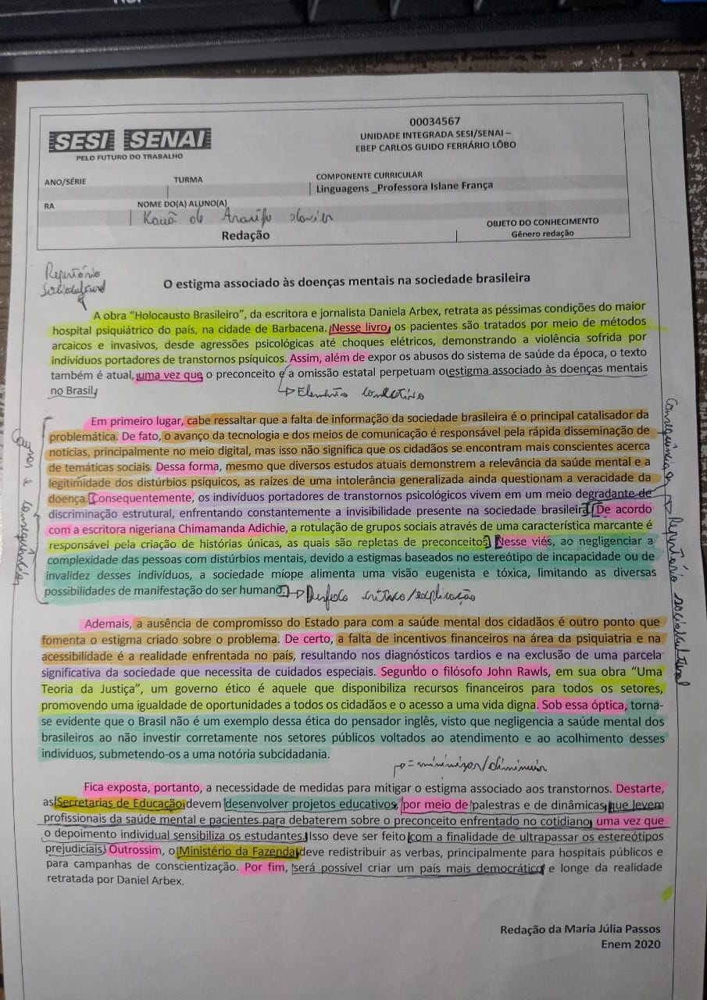
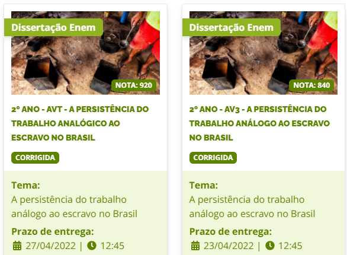

A palavra que melhor define essa aula/atividade é "Nostalgia".
Neste dia, ao voltar para casa no ônibus. Fiquei comigo, pensando, o quanto era incrível aquelas
tardes na casa de minha vó com os meus parentes, meus primos.
Talvez não tenha aproveitado a infância o suficiente ou tenha, afinal, fui feliz. Islane tocando corações.

Um questionário que durou 2 aulas para ser respondido, pelo menos por mim e meu colega. O que ficou para mim é que o temos que ficar ligados nos elementos referenciais.
Houve uma questão que erramos por conta de usarmos o "ele" sem especificar quem é.

Sobre essa atividade não tem o que comentar. Além das rizadas, a interação com público na hora da apresentação foi incrível.
O Kevin, um dos atores da peça, tacou uma bola de papel/granada no professor.
Fizemos um resumo e demos a nossa opnião sobre um capítulo do livro de "Memórias postumas de Brás Cubas".

Antes dessa aula, em minha cabeça resumo e resenha erão a mesma coisa. Após as aulas, ficou totalmente claro a diferença. O resumo, resumi sem distorcer a obra, com fidelidade.
A resenha, é um resumo com comentários do autor.

Bom, em relação a redações minha dificuldade é encontrar um repertório e os desenvolvimentos. Após essas aulas, percebi que os desenvolvimentos não são apenas o problema
separado em dois, e sim, um conjunto de consequências do problema, explicação e relacionamento com um repertório.

E aqui veio o resultado. Essa nota esclareceu muita coisa pra mim.